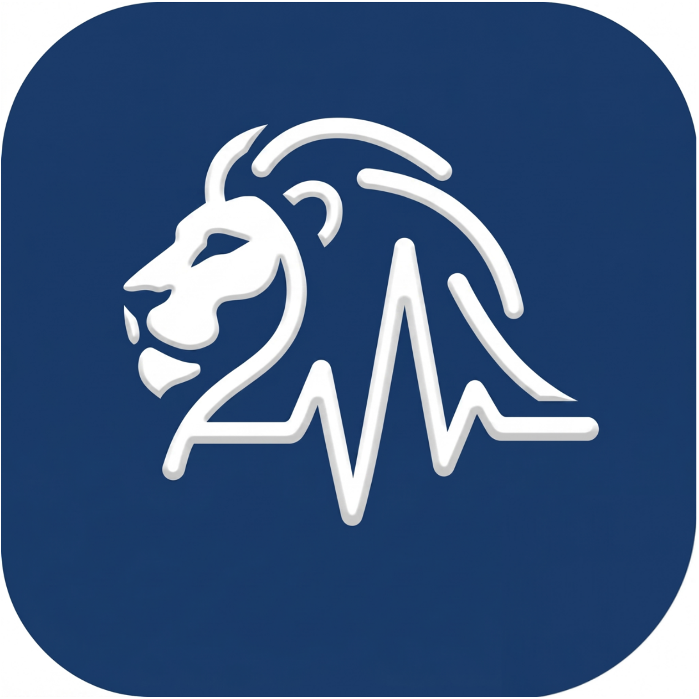
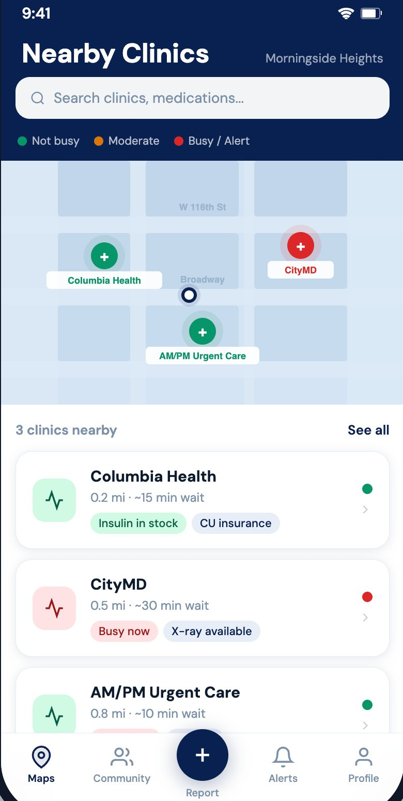
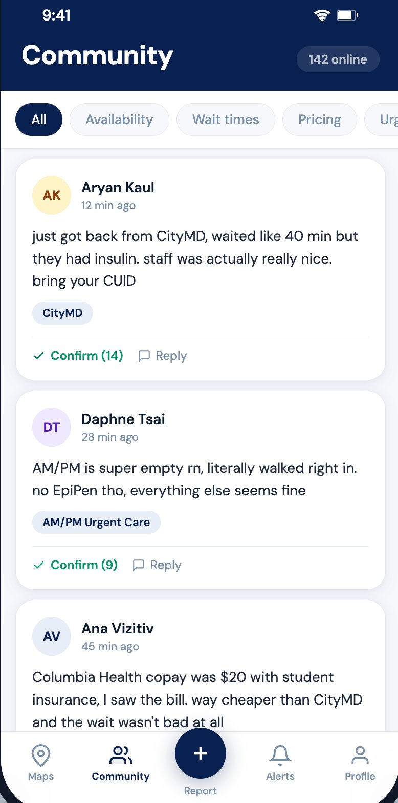
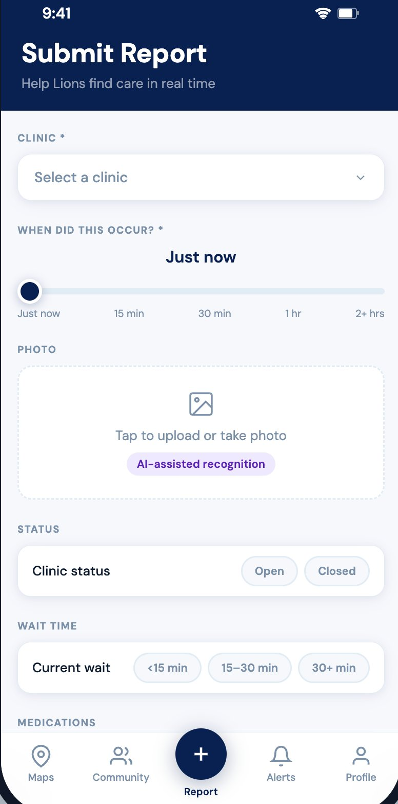
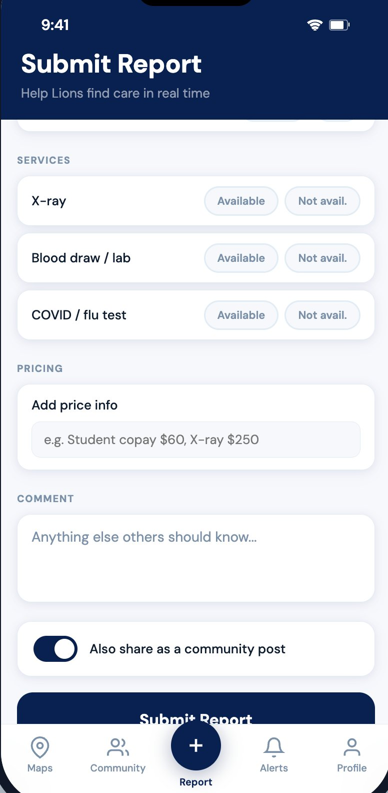
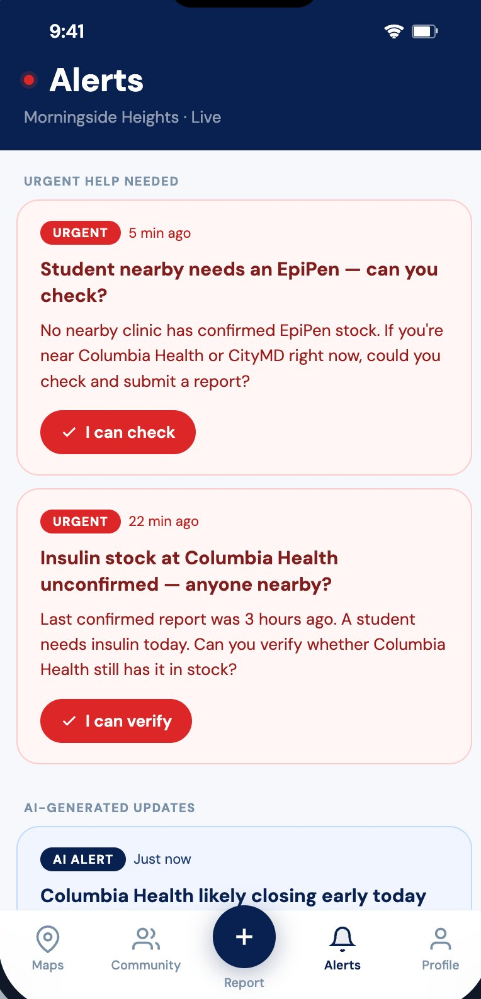
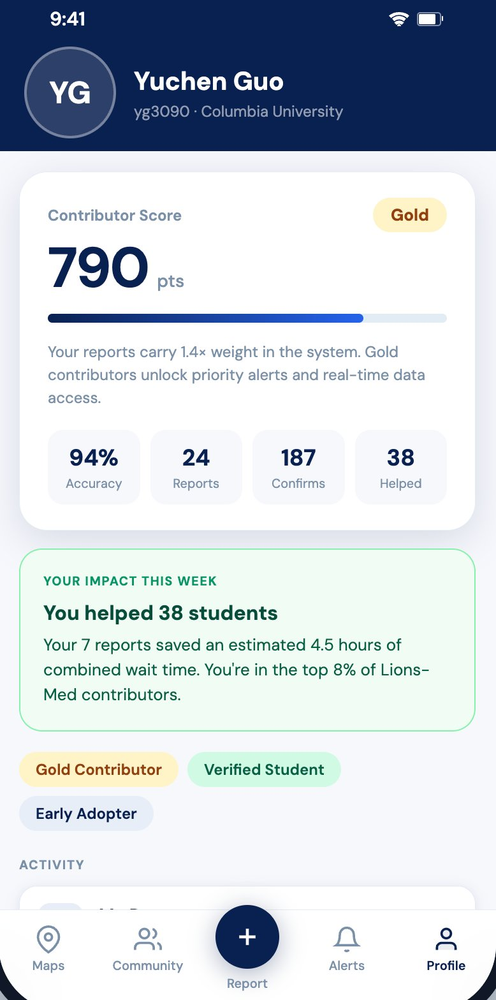

Lions-Med: real-time healthcare info for a city in recovery.
A crowdsourced platform that helps New Yorkers find clinics, medications, and care in the hours and days after a disaster, when official channels go dark.







The problem
When disasters hit New York, the visible response focuses on life-threatening injuries. But there's a quieter crisis underneath: the medical gray zone. Insulin running low. Asthma inhalers unavailable. A wound that needs stitches but isn't an emergency. Routine care that suddenly has nowhere to go.
Existing tools fail here. Hospital websites go stale. Google Maps doesn't know if a pharmacy has supplies. 311 is for triage, not navigation. People are forced to guess.
The hypothesis
The information already exists in the city, distributed across the people standing in waiting rooms, walking past closed pharmacies, refilling prescriptions. The question is not how to generate it. It is how to collect, verify, and surface it fast enough to matter.
For that to work, the platform has to earn an everyday role before disasters happen. A crowdsourced platform with no users on day zero is no platform on day one.
My role
I led the design and built the high-fidelity interactive prototype, a five-tab iOS app covering Maps, Community, Report, Alerts, and Profile. I owned the visual language, interaction flows, and the contributor-score system that distinguishes verified reports from unverified ones.
Research, content, and the strategic framing were team work with Aryan Kaul, Ana Vizitiv, and Daphne Tsai.
How we got there
The core design problem was the cold start. We solved it by anchoring the product in everyday utility: clinic wait times, medication prices, insurance coverage. The same data that helps a student pick where to fill a prescription on an ordinary day is the data we need already in place when an ordinary day is not.
Trust was the second design problem. We chose to expose raw community reports rather than pre-digested AI summaries. AI agents fill gaps from clinic websites and Reddit when the crowd is silent, but they sit beside the human reports, not above them.
Decisions left on the floor
An earlier version had healthcare providers as formal data partners, with API integrations and clinical dashboards. We cut it. Hospitals move on a different timescale than the platform needs to. Providers participate passively now, through a QR code at the check-in desk, and that is it.
We also dropped neighbor-to-neighbor supply sharing. The idea looked good on paper but raised real safety and liability problems we could not resolve at our scope.
What I learned
Trust and data don't scale the same way. A hundred reports can still feel unreliable, while three reports from people you recognize will move you. The contributor-score system isn't a gamification layer on top of the data, it is the structure that makes the data legible.
The other lesson came from feedback we received midway through. A case study set in Columbia is not a case study about Columbia. The pilot was the proof, not the point.